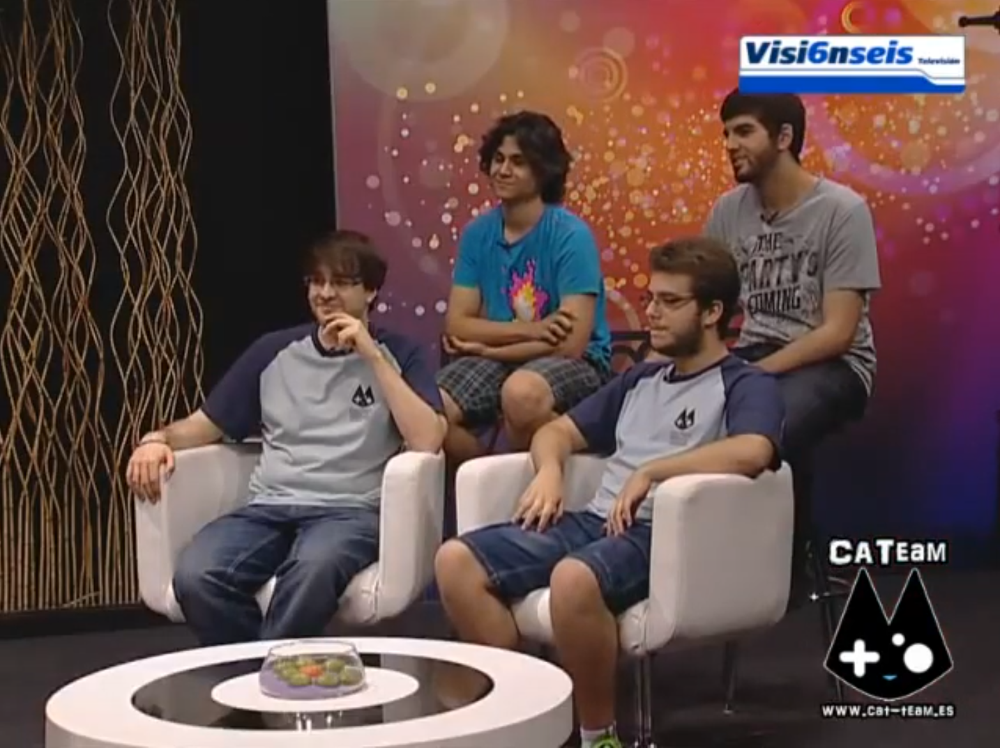
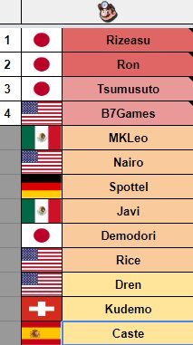
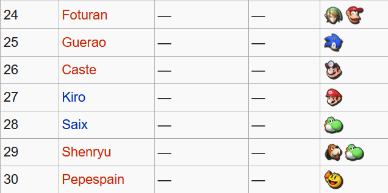
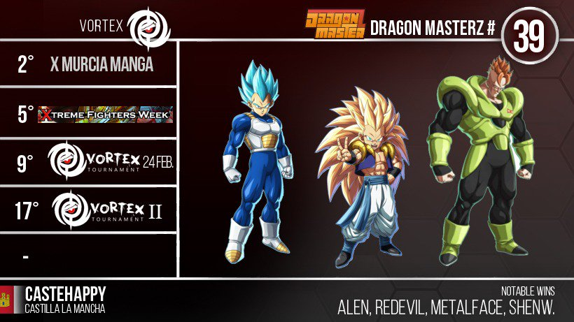
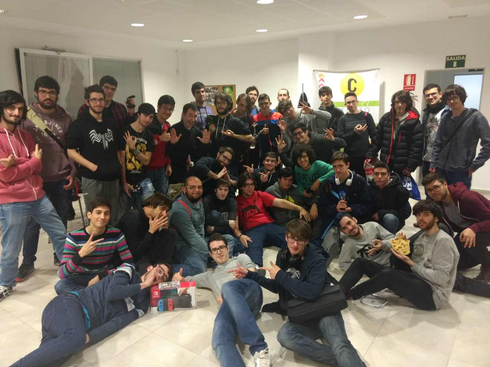
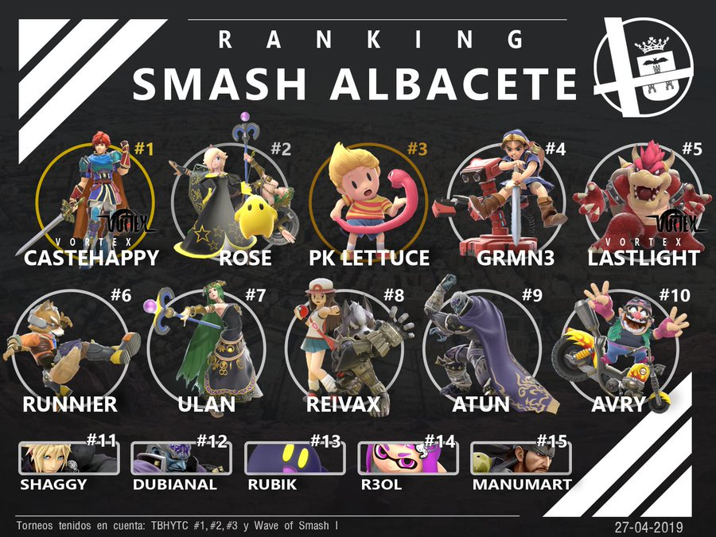
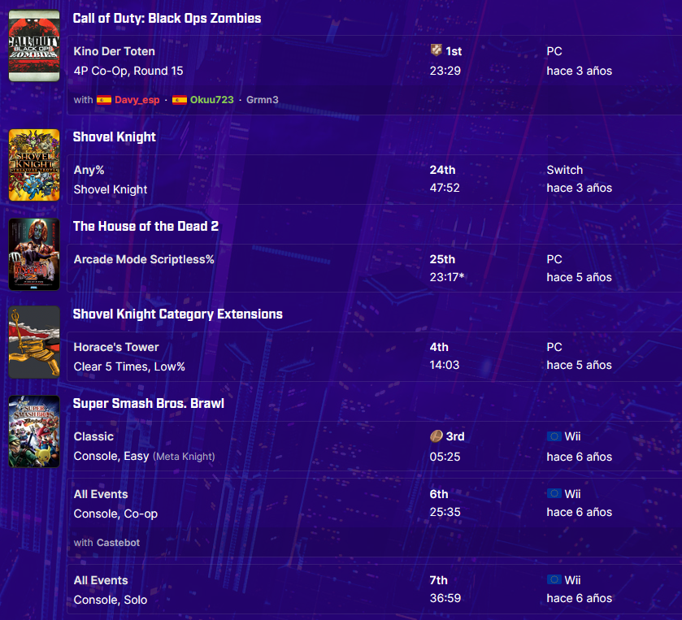
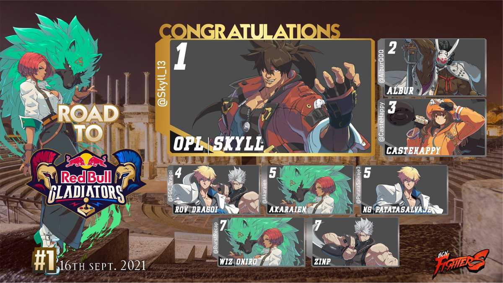

Hey!
I’m Caste, a self-taught video editor and fighting game competitor since around 2008. From the first time I’ve had internet access I’ve always been really fascinated by video editing and graphic design, thanks to places like Emudesc (a now defunct internet forum about videogames), DeviantArt, and of course Youtube and the YTP / YTPMV community, which really got me into learning proper video editing software and sparked my interest for a lot of internet subcultures and their repective styles, music preferences, and of course their sense of humour (I’ve been here for the laughs from the beginning, you see?).
It’s been a really slow learning process because I’ve never seen any of this as a professional skill, and I honestly used it as a last resort when the Covid pandemic hit. Since 2020 I’ve probably learned a lot more than in the last decade, and there’s still a lot I have to explore and get good at.
Video Editing
This is the main software I use:
- MAGIX Vegas Pro 21
- Adobe After Effects 2021
- Adobe Photoshop 2021
- Reaper
I also have experience with Adobe Premiere but I GREATLY dislike the workflow, and the advantages from Vegas Pro are not worth it.
Since August 2020 I’ve been working mainly as a video editor for Diaphone (a top level fighting game player and content creator), making mostly all videos and thumbnails on the channel (around 185) and getting over 6 Million views and 70.000 suscribers. While also making some other videos and thumbnails for other smallers creators in the same space.

|
|---|
| A bunch of recent thumbnails |
Playlist with all the vids I’ve edited:
Outside of work I’m a YTPMV / 音 MAD enthusiast and I make them from time to time, which is my favourite audiovisual genre and internet culture.
I’ve participated in some YTPMV Collaborations, including the almost 2 hour long “The hhgregg Collab - It’s “Christmas in July!”, with entries from around 50 people.
Playlist with all my YTPMVs:
Competitive gaming, Smash, the FGC and Speedrunning
Around 2008 I started playing Super Smash Bros. Melee casually with some high school friends, and I became obsessed with it. It lead me to start competing in tournaments when Brawl came out, which I was never good at, but I was passionate enough to organize our own tournaments, create a now defunct small eSports team (CATeam) and even collaborating with a local TV in SSBB’s final year.
|  |
|---|
| That’s me at the bottom right at a TV interview (2014) |
Since then I’ve competed
2014 - 2017
I kind of made a name for myself when Smash 4 came out, I played Dr. Mario which was probably the worst character in the game, and I got into the top 30 in the country in 2015 and overall best player in my region for most of it. Though my run in Smash 4 was short lived (because I hate that game’s guts and I was a scrub), we ended up building a really cool and healthy local community in which we organized monthly tournaments right until around the end of 2016.
|  |  |
|---|---|
| List of best Doc players by Tetra76 | 2015 Spanish power ranking |
2017 - 2020
I got my first job in 2017 and I finally got a PC and a fightstick so I could try fighting games, which I’ve always watched tournaments for (mostly SF4 / V and UMVC3) but I could only play older games, and I never had the patience to properly practice.
Didn’t stick with any fg until Dragon Ball FighterZ came out, which I played to death and it’s still my favourite fighting game to this day. Played it for more than 2500 hours and travelled to a bunch of national tournaments, I even got sponsored by “Vortex” a small local team that organized tournaments and competed in most fighting games.
I never won a proper tournament for DBFZ, Spain had a really stacked community and everyone was playing it, but I did manage to get top 8 in most tournaments, even getting 2nd / 3rd multiple times in the first 2 years of the game, getting 39th in the first national ranking.
|  |
|---|
| As you can see, I was carried by assists |
When Smash Ultimate came out, we started organizing tournaments again, I’d say we had the best tournaments in the country (but no one would come from outside our local community and a couple of neighbour ones)
|  |
|---|
| Most of the attendees at our second Ultimate tournament |
I had a really cool rivalry with a new player called Rose that lasted until the Covid pandemic started, trading tournament wins back and forth. I’d say this couple of years were my peak in skill in Smash, and even though I couldn’t really practice properly, I never had so much intense and fun sets in my life. Ended up being the best in my region until the pandemic hit us.
|  |
|---|
| Roy is busted but I carry him |
Around this time I also got really interested in speedrunning, it was always in the back of my mind but it was kinda intimidating.
I started running some of my favourite games just for fun, even if no one was really competing in them (like SSBB, The House Of The Dead 2, or even Call of Duty Zombies). It wasn’t until I tried running Shovel Knight that I really got into it. Played that game a lot casually, but I’ve probably spent more than 1000 hours in failed runs alone, probably one of the best speed games for beginners, really easy to get into, with a really satisfying skill ceiling.
My PB for Any% ended up being 47:52, 24th out of 229 in the leaderboards.
|  |
|---|
| All my PBs in different games |
2020 - Present
Yeah… those years sucked (and still suck) No more tournaments, no more offline, online for DBFZ and Ultimate is insanely bad so I stopped playing altogether, and absolutely 0 motivation to continue speedrunning.
All the new local Smash players that were decent but not all that good, started grinding online like crazy so when we finally started going to tournaments again I really felt behind. I’ve tried leveling up a couple of times since then but it hasn’t worked, right now I’m on hiatus (Ranked 6th), probably not playing Smash until a new one (with good online) comes out.
DBFZ completely died, no more tournaments that I could easily travel to, and no one left on my region to play offline, so I dropped that too.
I was hoping for Guilty Gear Strive to revive our local FGC scene but it seems that almost everyone disliked it, and after one small tournament right after launch, they stopped playing.
I did got 3rd out of ~80 in a really stacked european online tournament for GGST, looking back I still don’t know how the hell I ended up in that top8.
|  |
|---|
| Only lost to Albur and Skyll, how the hell did I got 3rd |
Right now I’m just looking forward to some new game that I can play offline, online sucks no matter how good the connection is so I’m not invested in any competitive game.
Hopefully it’s not the end of my competitive run 🥶
Other interests
Besides all that, I’m into videogames (who would’ve thought) and videogame criticism. Same with music, but I’ve been less and less interested in new music for a couple of years now. I have a Backloggd and RateYourMusic account if you wanna see what I’ve been up to.